Industry¶
Naming convention¶
The industry dataset in SEDOS is categorized into sub-sectors of industry, which are aluminum, automobile, cement, copper, chemical, glass, paper, steel, and the rest of the industry (ind_others_). Moreover, industry also includes so-called 'autoproducer' processes (ind_autoproducer_) as self-generation technologies and two simplified agricultural processes (ind_agri_standard_0, ind-agri_improved_1) to account for emissions from livestock harvesting. The complex heterogeneity of industry sectors is represented by individual sub-sector process chains. Each sub-sector contains a bunch of processes within the process chains to capture the best possible energy consumption characteristics of the respective sub-sector, and the processes are driven by the exogenous demand of production (exo_commodity). Furthermore, source processes (ind_source_) are also introduced where necessary to supply commodities (e.g. raw materials, scraps) the beginning of the process chain.
The table below shows the nomenclature of process naming in industry.
Table 1: Nomenclature for the industry sector process naming.
| Sector | sub-sector | Process type/specification | Stock/Expansion |
|---|---|---|---|
| ind | aluminum | [pri, sec, aluminabayer] | 0 |
| automobile | [pc, hcv, lcv][icev, phev, bev, fcev], prtp, bdys, pnts, hvlt, mcmp,fasmbl | 1 | |
| cement | [rk, rawmats, novel, finish, novelfinish],ccs | ||
| copper | [pri, sec] | ||
| chemical | [nh3, methanol, cl2, olefins, btx], hb, [msyn, mhydr], [memb, diaph], [scrac, ecrac, mto, mta], [smr, aec, pemec, biog, mpyr] | ||
| glass | [flat, cont, spec, fibe], [batchplant, oxyf, oxyh, fulle, rege, recu, forming] | ||
| paper | [hchem, lchem, lmech] | ||
| steel | [blafu, elefu, dirred, hyddri, oxyfu, pellet, sinter, sponge, casting] | ||
| others | [heat_pump, mdrive, heat_proc, steam, cool, kiln, light, pump_fans, solar_heat, ind_boiler, ict] | ||
| autoproducer |
Provided parameters¶
Generally defined parameters are used in industry to provide the data. More details on parameters can be found in the relevant section of the documentation. In industry, only demand time series data are provided in a simplified manner. In SEDOS, no variation of production quantity is considered depending on temporal data. The demand profile is simply a normalized fraction of 1, which is calculated by dividing 1 by 8760 for the value of an hourly timeslice.
General modeling approach¶
The industry sector has been classified into 12 major branches, with detailed modeling applied to eight of them, including automotive, cement, chemicals, glass and ceramics, iron and steel, non-ferrous metals, and paper. The remaining four branches food and tobacco, rubber and plastic, metalworking, and machinery equipment are included in the model structure in a simplified manner. Figure 1 depicts a comprehensive overview of the representation of the industrial sector,including the 11 branches, their main exogenous demand products,and the considered existing and relevant novel production routes for each of those demands. The inclusion of self-generation technologies, particularly for electricity, is a key component of the industry model structure. This model differentiates between externally supplied electricity and self-generation within the industry, providing insight into energy generation-related investments and potential grid infrastructure needs. Self-generation technologies are used across the entire industrial sector, with no regard for industry branch specificity.
![Figure 1: Categorization of the industry subsectors (dark gray), its products (light gray) and the possible production routes (blue). *are modeled in an aggregated manner. **Food and tobacco, rubber and plastic, metalworking and machinery equipment industries are modeled individually yet in a simplified manner.Abbreviations: LCV: Light Commercial Vehicle; HCV: Heavy Commercial Vehicle; ICEV: Internal Combustion Engine Vehicle; PHEV: Plug-in Hybrid Electric Vehicle; BEV: Battery Electric Vehicle; FCEV: Fuel Cell Electric Vehicle.](../../../graphics/industry_overview.png) Figure 1: Categorization of the industry subsectors (dark gray), its products (light gray) and the possible production routes (blue). are modeled in an aggregated manner. *Food and tobacco, rubber and plastic, metalworking and machinery equipment industries are modeled individually yet in a simplified manner.Abbreviations: LCV: Light Commercial Vehicle; HCV: Heavy Commercial Vehicle; ICEV: Internal Combustion Engine Vehicle; PHEV: Plug-in Hybrid Electric Vehicle; BEV: Battery Electric Vehicle; FCEV: Fuel Cell Electric Vehicle. Source: Reveron Baecker, B. et al. (2024) "Comprehensive and open model structure for the design of future energy systems with sector coupling"
Figure 1: Categorization of the industry subsectors (dark gray), its products (light gray) and the possible production routes (blue). are modeled in an aggregated manner. *Food and tobacco, rubber and plastic, metalworking and machinery equipment industries are modeled individually yet in a simplified manner.Abbreviations: LCV: Light Commercial Vehicle; HCV: Heavy Commercial Vehicle; ICEV: Internal Combustion Engine Vehicle; PHEV: Plug-in Hybrid Electric Vehicle; BEV: Battery Electric Vehicle; FCEV: Fuel Cell Electric Vehicle. Source: Reveron Baecker, B. et al. (2024) "Comprehensive and open model structure for the design of future energy systems with sector coupling"
Automobile Industry¶
The automobile industry in SEDOS consists of energy consumption, techno-economic and emission data to produce automobiles in Germany. First, the types of automobiles are divided based on usage into passenger cars (PC), light commercial vehicles (LCV), and heavy commercial vehicles (HCV). Then these are also subdivided into based on drive types. So four different types of passenger cars are considered: internal combustion engine vehicles (ICEV), plug-in hybrid electric vehicles (PHEV), battery electric vehicles (BEV), and fuel cell electric vehicles (FCEV). Light commercial vehicles and heavy commercial vehicles are categorised into internal combustion engine vehicles (ICEV), battery electric vehicles (BEV), and fuel cell electric vehicles (FCEV). As per category of each automobile, production volume in million units is provided as an exogenous demand.
The complex production process chains of the above-mentioned automobiles are portrayed through aggregated processes such as the parts production process, battery production, painting, and assembly in energy system model. The parts production process represents energy consumption data of most of the energy-intensive processes to produce components or parts of automobiles. Parts production processes hold aggregated energy consumption data for metal forming (stamping, extruding, casting, drawing, machining, forging), polymer forming (injection molding, compression molding, blow molding, extruding, calendering), glass and carbon fiber reinforced plastic fabrication, welding, and others. Electricity and process heat (400–1250 °C) as input commodities flow into the part production process. Different process heat technologies, such as furnaces based on energy carriers, are available to generate process heat for the parts production process. The battery production process includes energy consumption of drying, dry room, notching, stacking, final sealing, and other processes to produce the battery. Electricity and steam (110-200 °C) are input commodities for battery production. The energy consumption of pretreatment, painting, undersealing, cavity protection, drying, and other processes is depicted by the painting process, where electricity, hot water (up to 60 °C), and steam (110-200 °C) are input commodities for painting processes. Similar to technologies for process heat, techno-economic data for hot water and steam generation technologies are prepared and made available accordingly. Finally, the assembly process completes the chain by producing exogenous demand (automobile). The simplified process chain of automobile production processes is depicted in Figure 2.
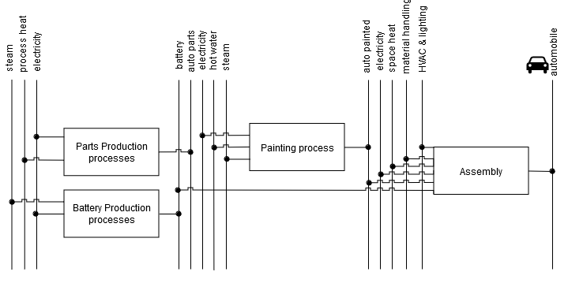 Figure 2: Simplified representation of Automobile industry process chain.
Parts production, battery production, painting, and assembly processes are distinguished and prepared for each automobile type as categorized so that the energy consumption burden is specific to each automobile type. It is important because energy consumption varies depending on the automobile type, as the size, components, and materials of the automobile are different for individual automobile types. During the data preprocessing, these factors are considered, and data are processed accordingly. Which means required energy consumption in SEDOS data to produce parts for internal combustion passenger car (ICEV) is different than any other different automobile whether it is passenger car (PHEV, BEV or FCEV) or commercial automobile (LCV or HCV). This approach is also true for battery production, painting and assembly process so that energy requirements to produce automobile specific to each category. An overview of the passenger car production chain in modeling schema follows in figure 3, with distinguished production processes based on automobile type.
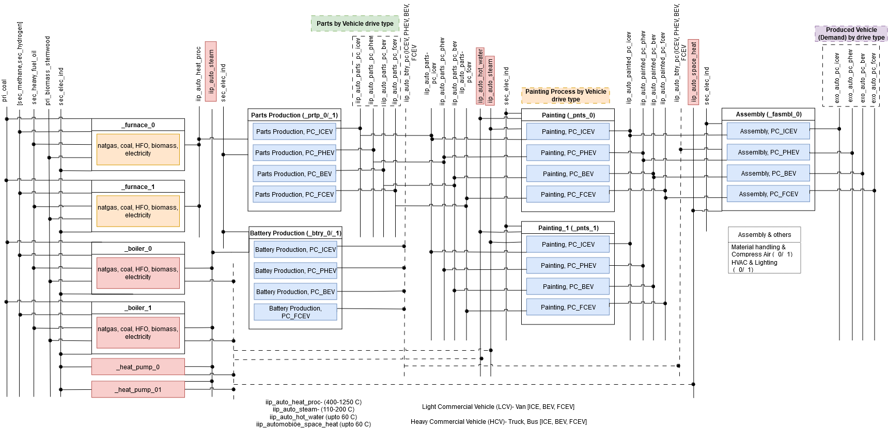 Figure 3: Modeling schema of passenger car production chain.
Input commodity flows into the processes are given in petajoules (when a commodity is an energy carrier) and in million units (when a commodity is material, e.g., a battery or parts) per million units of output. No emissions are assumed in these processes. Emission occurs in the processes that generate process heat, steam, hot water, and space heat, depending on the technology. Input flow for these heat generation technologies is given in petajoules (PJ) per PJ output. As an example, for a gas boiler whose efficiency is considered 85 percent, the input and output flow conversion factors are given as follows:
input (1 PJ) -> boiler -> output (0.85 PJ) + emissions
sec_methane (1 PJ) -> boiler -> iip_auto_steam (0.85 PJ) + emi_co2_ind (55.8 Kt) +
emi_ch4_ind (0.002 Kt) + emi_n2o_ind (00005 Kt)
Combustion emission coefficients are provided in terms of input flow and in thousand tonnes (Kt) per PJ. Base year processes with existing capacity and best available and innovative technologies as new invest processes are also introduced, where it is assumed that base year processes stock decreases linearly and new processes can take place with given investment cost. To summarize the modeling approach of the automobile industry process chain, process heat, steam, hot water, and space heat are produced by respective technologies. Then the parts production process produces parts (e.g., iip_auto_parts_bev) for a specific automobile by consuming energy (iip_auto_heat_proc and sec_elec_ind), then the parts (e.g., iip_auto_parts_bev) go into the painting process alongside energy carriers (iip_auto_hot_water, iip_auto steam, and sec_elec_ind) and produce painted commodities for the specific automobile (e.g., iip_auto_painted_bev). The battery production process for the specific automobile produces batteries as an output with the input flow of steam and electricity (iip_auto_steam and sec_elec_ind). At the end of the process chain, painted automobile commodities(e.g., iip_auto_painted_bev), batteries for the specific automobile (e.g., iip_auto_btry_pc_bev), energy carriers(iip_auto_space_heat and sec_elec_ind), and other commodities such as material handling and compressed air(iip_auto_mcmp) as well as HVAC and lighting (iip_auto_hvlt) are taken as input in the assembly process,and final exogenous demand is produced as output (e.g. exo_auto_pc_bev).
Cement Industry¶
Cement production is modeled through a series of aggregated processes representing its three main production steps: raw material preparation, clinker production, and cement production (finishing). Each of these aggregated steps features different technology levels to reflect current practices and future innovation. For each of the three steps, a base year process (2021) and an upgrade process to Best Available Technology (BAT) standard are considered. The raw material preparation process encompasses the grinding and homogenization of raw materials (such as limestone and clay) into raw meal. This process primarily consumes electricity. Clinker production is the core and most energy-intensive stage, involving the rotary kiln furnace and subsequent clinker cooling. This stage is crucial not only for its high energy demand but also for the significant process emissions of CO2 released from the calcination of limestone, in addition to combustion emissions from fuels. To address these, beyond the base and BAT rotary kiln technologies, the model includes an additional five innovative clinker production processes:
- A retrofit of the BAT rotary kiln with carbon capture (oxyfuel capture), specifically designed to capture both combustion and process CO2 emissions. For this investment, investment costs and emissions factors are adjusted to reflect the capture process and the resulting captured CO2.
- A rotary kiln option utilizing CO2 for CO2-curing cement, representing a carbon capture and utilization (CCU) pathway.
- A kiln incorporating an electric pre-calciner, enabling a shift of a portion of the thermal energy demand to electricity.
- A pathway focusing on low-limestone clinker production using adapted OPC (Ordinary Portland Cement) equipment, which inherently reduces process CO2 emissions.
- A fully electric kiln, representing a transformative shift to electricity as the primary heat source for clinker production.
Finally, the cement production (finishing) process involves the grinding of clinker and the integration of additives to produce the final cement product, primarily consuming electricity. The finished cement product is then an exogenous demand that the model must satisfy. The complex production process chains described above are aggregated within the model for streamlined analysis. For instance, the clinker production processes represent the combined energy consumption and emissions associated with the kiln operation, including heat supply. Electricity and various fuels (coal, heavy fuel oil, biomass, sewage sludge) are input commodities into these production processes. While process emissions are directly attributed to the clinker production process itself, combustion emissions are linked to the specific fuel inputs. High-temperature waste heat is also an output from clinker production, which can be utilized elsewhere in the energy system. No negative emissions are assumed directly within the basic production processes themselves, but are explicitly handled by the specialized carbon capture technology (ind_cement_rk_cc_2) where captured CO2 is routed for storage (emi_co2_neg_fuel_cc_ind), contributing to the overall climate neutrality target.
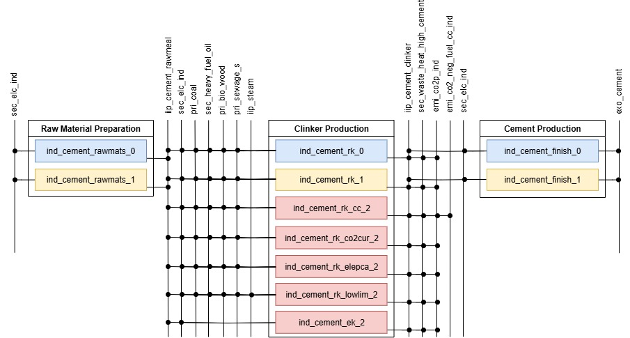 Figure 4: Simplified representation of Cement Industry process chain.
Each of these production processes (raw material preparation, clinker production, and cement finishing) is defined with specific techno-economic data. Base year processes are assumed to have existing capacity that decreases linearly over time, while BAT and innovative technologies are introduced as new investment options with their respective investment costs and operational costs.
Chemical Industry¶
The chemical industry in SEDOS covers the data set of chemical industry production in Germany to be utilized in an energy system model. Hundreds of different chemical processes are in operation to produce thousands of different chemicals, which means the production path of the chemical industry is complex. The data set and the modeling approach of the chemical industry can be differentiated in terms of the exogenous demand of the chemical industry. The basic chemicals- chlorine, ammonia, methanol, olefins (ethylene, propylene, butadiene), and aromatics (benzene, toluene, xylene) make up the largest share of the chemical industry. The exogenous demand for these basic chemicals is given in million tons (Mt), so the energy consumption and techno-economic data are directly related to the production volume of these basic chemicals. Then, the rest of the chemical industry demand is represented by the energy service demand, which is given in Petajoule (PJ). The chemical industry heavily relies on fossils, both for energy and feedstock, aka non-energetic consumption. In SEDOS chemical industry data, the flow of energy and feedstock into processes to produce chemicals is distinguished, where it is significant. That means feedstock flows separately integrated not only for carbon-contained fossil feedstocks (e.g. natural gas, naphtha, heavy fuel oil, etc) but also alternative low-carbon or green feedstocks (e.g. hydrogen from electrolysis, green methanol). On the other hand, feedstock flow for chlorine production, nitrogen as feedstock in the Haber-Bosch process, or water in the electrolysis process are not included in this work. The emission from fuel combustion and the emission from feedstocks or process-related emissions are categorized as combustion and process emissions, respectively. The combustion emission is usually input-specific and process emission is related to output. Techno-economic data are provided for conventional technologies, best available technologies (BAT), and innovative technologies accordingly. Use of captured Carbon-di-oxide (CO2) as feedstock is also enabled with carbon-capture technologies, and those captured CO2 are made available to be utilized as feedstock through the delivery process (helper_co2_delivery). Relevant technologies are provided to produce hydrogen, which will be used as feedstock in the chemical industry to produce ammonia and methanol. The hydrogen production technologies and hydrogen commodities names are created accordingly, considering hydrogen as input flow into the methanol synthesis process and Haber Bosch process, respectively. The ammonia production modeling schema is presented in Figure 5.
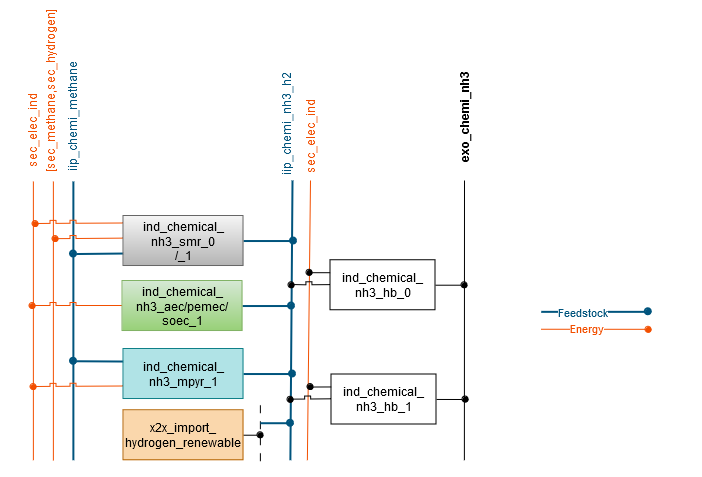 Figure 5: Modeling approach of ammonia production process chain.
Hydrogen commodities for methanol production are specified variably, whether the hydrogen (iip_chemi_meoh_f_h2) is generated from fossil feedstock (natural gas, heavy fuel oil) or biomass or the hydrogen (iip_chemi_meoh_h2) is green hydrogen. Two different methanol commodities are introduced, one (exo_chemi_methanol) represents exogenous methanol demand and another (iip_chemi_methanol) can be used further in the chemical industry as feedstock into methanol-to-olefins or methanol-2-aromatics processes. High-value chemical production processes are differentiated to satisfy the exogenous demand for aromatics and olefins. Figure 5 shows the modeling approach of exogenous demand for methanol and methanol flow as feedstock for high-value chemicals production, including a simplified feedstock flow of CO2.
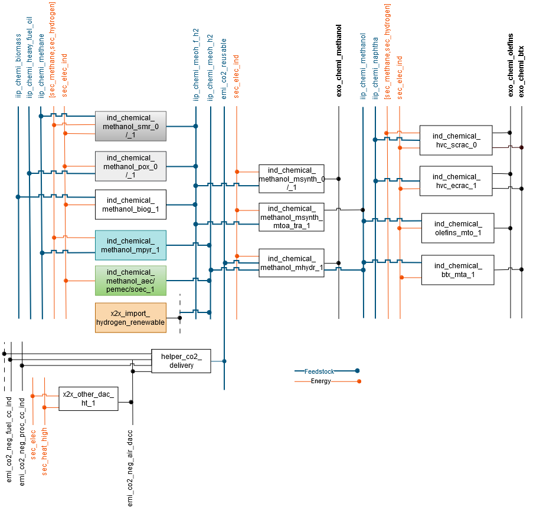 Figure 6: Modeling approach of methanol and high value chemicals production process chain.
The production volume of ethylene is considered to represent the exogenous olefins demand due to the coupled production of conventional process (steam cracking). Processes and energy service commodities- steam (iip_chemi_steam), process heat(iip_chemi_process_heat), other processes(iip_chemi_processes_others), electro-chemicals (iip_chemi_electro_chem) and machine drive (iip_chemi_machine_drive) are introduced accordingly to meet the exogenous energy service demand (exo_chemi_others) of rest of the chemical industry.
Glass Industry¶
The German glass industry module within the SEDOS is categorized into four distinct branches based on the type of glass produced: hollow glass (container glass), flat glass, fiber glass, and special glass. Each branch is modeled with its specific production processes and technological pathways. The complex production process chains for each glass type are portrayed through processes within the energy system model. For hollow glass and flat glass, the production chain is typically disaggregated into three or four primary stages: batch preparation, melting, forming, and, for flat glass, an additional finishing (annealing) step. For fiber glass and special glass, the production is represented by aggregated production processes, encompassing all stages from raw material processing to final product. For the base production steps across all branches, a base year process (2021) is included, representing typical technology and efficiency levels. Additionally, an investment option into the Best Available Technology (BAT) standard is provided for most stages, offering more efficient and advanced current technologies for new investments. Melting is the most energy and emission intensive stage in glass production. The model captures different melting technologies and innovative pathways:
- Recuperative and regenerative furnaces: These represent common thermal melting technologies for hollow and flat glass.
- Full electric melting: An innovative process route is included for the melting step across hollow and flat glass, allowing melting to be achieved primarily or entirely using electricity.
- Carbon capture integration: To address CO2 emissions, particularly for hollow glass, further investment steps are available to integrate carbon capture (oxyfuel capture) technology with both recuperative and full electric melting processes. This allows for the capture of CO2 from the melting process, which includes both combustion emissions and, importantly, inherent process emissions that arise from the decomposition of raw materials like carbonates in the glass batch. For fiber glass and special glass, the aggregated production processes also feature base, BAT, and specific electric furnace options, indicating pathways for deep decarbonization through electrification. Useful outputs, such as high-temperature waste heat, are also tracked for potential usage within the overall energy system. The demand for each type of glass (e.g., exo_glas_cont for container glass, exo_glas_flat for flat glass, exo_glas_fibe for fiber glass, exo_glas_spec for special glass) is provided as an exogenous demand that the model must satisfy. The process chains for each glass industry branch, illustrating the various technological pathways and energy flows, are depicted in the following figures:
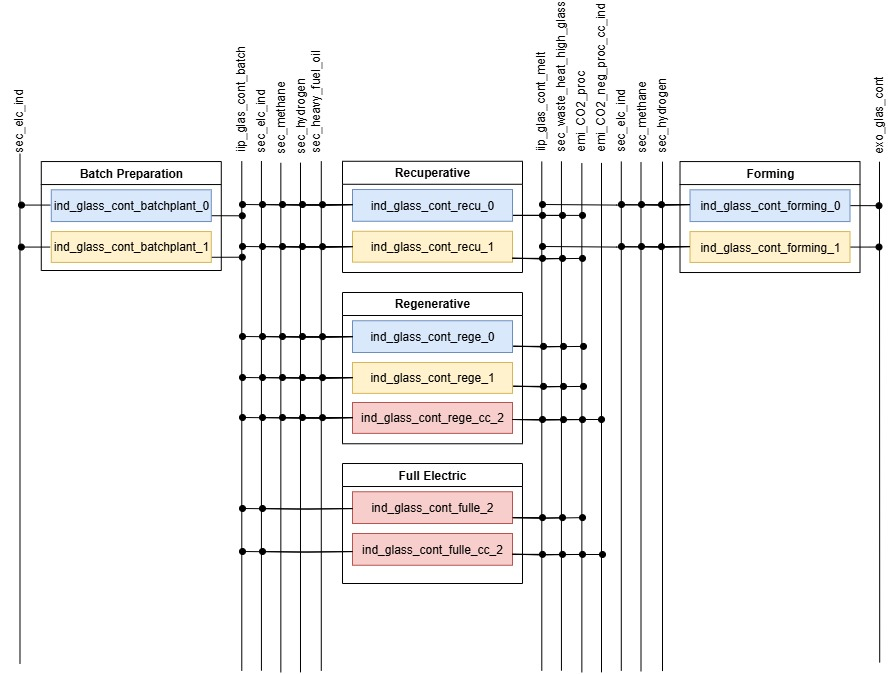 Figure 7: Reference Energy System for Hollow Glass (Container Glass).
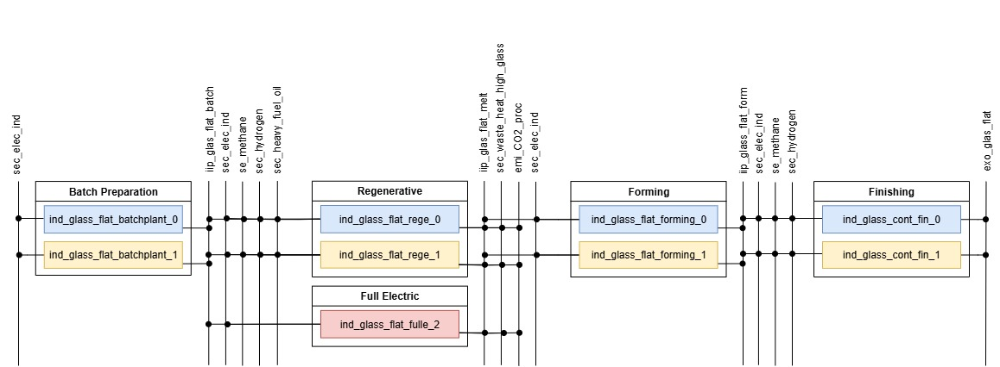 Figure 8: Reference Energy System for Flat Glass production process chain.
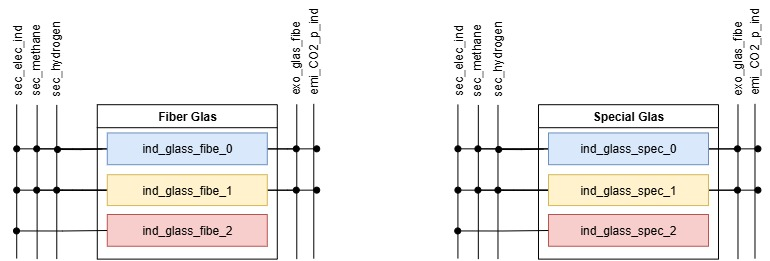 Figure 9: Reference Energy System for Fiber Glass and Special Glass production processes.
Base year processes are assumed to have existing capacity that decreases linearly over time, while BAT and innovative technologies are available as new investment options to drive the decarbonization pathway.
Iron and Steel Industry¶
The Iron and Steel industry module distinguishes between existing and innovative production routes, reflecting the complex pathways for decarbonization in this energy-intensive sector. The core of steel production in the model is divided into two primary conventional routes: the blast furnace-basic oxygen furnace (BF-BOF) route and the electric arc furnace (EAF) route. Additionally, two crucial innovative production routes are considered: direct reduced iron (DRI) route and hydrogen direct reduced iron (H-DRI) route. The specific production steps and technologies vary significantly depending on the chosen route. For the blast furnace-basic oxygen furnace (BF-BOF) route, which is the predominant current method for primary steel production, five distinct aggregated steps have been considered:
- Coking plant production: Converts coal into coke, a necessary reducing agent and fuel for the blast furnace.
- Sinter production: Agglomerates fine iron ore particles into larger pieces (sinter) suitable for the blast furnace.
- Blast furnace (BF): Reduces iron ore (and sinter) using coke to produce hot metal (molten iron).
- Oxygen furnace (BOF): Converts hot metal from the blast furnace into crude steel by blowing oxygen through it to remove impurities.
- Casting plant & hot rolling mill: Shapes the crude steel into semi-finished or finished steel products.
Maintaining the modeling standard, each of these base processes within the BF-BOF route has the possibility to be replaced by a Best Available Technology (BAT) standard process. On top of these, the blast furnace process, being a significant source of emissions, features two further innovative process investment options for carbon capture:
- Amine capture (advanced solvent): Represents a post-combustion capture technology applied to the blast furnace gas.
- Vacuum pressure swing adsorption (VPSA): Another carbon capture technology, specifically for CO2 separation from blast furnace top gas.
The second existing route, the electric arc furnace (EAF) route, is characterized by its flexibility in using scrap metal. It consists of three main aggregated processes:
- Iron scrap source: Represents the sourcing and preparation of iron scrap as the primary feedstock. This process contains no economical information and does not account for any energy consumption, but rather is used to limit the availability of steel scrap.
- Electric arc furnace (EAF): Melts iron scrap using electricity to produce crude steel.
-
Casting plant & hot rolling mill: Similar to the BOF route, shapes the crude steel into final products. For the direct reduced iron (DRI) route, which is considered an innovative process for primary steel production, four production steps are modeled:
-
Iron pellets production for DRI: Prepares iron ore into pellets suitable for direct reduction.
- Sponge iron production for DRI: Produces sponge iron (DRI) from iron pellets, typically using natural gas as a reducing agent.
- Electric arc furnace for DRI: Processes the sponge iron in an electric arc furnace to produce crude steel.
- Casting plant & hot rolling mill: Shapes the crude steel.
Similarly, the hydrogen direct reduced iron (H-DRI) route represents a major decarbonization pathway. It consists of equivalent processes to the DRI route but with the necessary techno-economic adjustments to primarily use hydrogen as the energy carrier and reducing agent. The process chains for the iron and steel industry, illustrating the various technological pathways and energy flows, are depicted in the following figure:
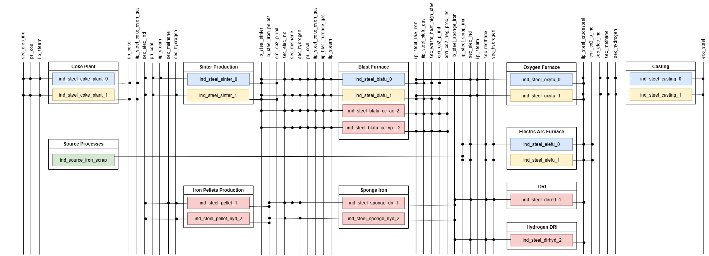 Figure 10: Reference Energy System for the Iron and Steel Industry.
Base year processes have existing capacities that decrease linearly over time, while BAT and innovative technologies are available as new investment options with their respective investment costs and operational costs.
Non-ferrous metals Industry¶
The non-ferrous metal industry module within the SEDOS focusses on aluminum and copper. The model aims to portray the sector's transformation towards climate neutrality by 2045, accounting for both primary and secondary (recycled) production routes and their respective technological advancements.
Aluminum Production¶
Aluminum production in the model is primarily divided into three main process stages: alumina production, primary aluminum production (electrolysis), and secondary (recycled) aluminum production.
- Alumina production: This initial stage involves the processing of bauxite ore to produce alumina (aluminum oxide), typically through the Bayer process. The model includes both a base and a Best Available Technology (BAT) process for alumina Bayer, primarily consuming electricity, natural gas, heavy fuel oil, and steam.
- Primary aluminum production (Hall-Heroult): This is the most energy-intensive step, where alumina is converted into aluminum metal through electrolysis in Hall-Heroult cells. The module captures both a Base and a BAT Hall-Heroult process. In addition, a novel Hall-Heroult process with innovative anode wett cathodes is included, representing a next-generation technology designed to improve efficiency and potentially reduce emissions from the electrolysis process.
- Secondary (recycled) aluminum production: This route involves melting aluminum scrap to produce recycled aluminum. The model distinguishes between a base and a BAT recycled production process, which are typically less energy-intensive and have lower direct emissions compared to primary production. The source process for aluminum scrap contains no economical information and does not account for any energy consumption, but rather is used to limit the availability of aluminum scrap.
The Hall-Heroult process is a significant source of process emissions (emi_co2p_ind) from the anode consumption, in addition to combustion emissions. The module also tracks the generation of high-temperature waste heat (sec_waste_heat_high_aluminum). The process chain for aluminum production, illustrating the various technological pathways and energy flows, is depicted in the following figure:
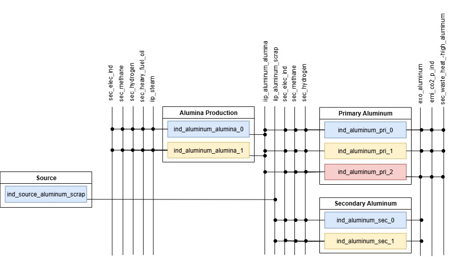 Figure 11: Reference Energy System for the Aluminum production process chain.
Copper Production¶
Copper production in the model also distinguishes between primary copper production and secondary (recycled) copper production.
- Primary copper production: This route involves smelting and refining copper ores. The model includes base and Best Available Technology (BAT) processes for primary copper production. An innovative copper electrowinning process is also included, representing a more energy-efficient and cleaner method for copper refining, which relies heavily on electricity.
- Secondary (recycled) copper production: This route involves melting and refining copper scrap. The model includes base and BAT processes for secondary production, drawing input from copper scrap. The source process for copper scrap contains no economical information and does not account for any energy consumption, but rather is used to limit the availability of copper scrap. The process chain for copper production, illustrating the various technological pathways and energy flows, is depicted in the following figure:
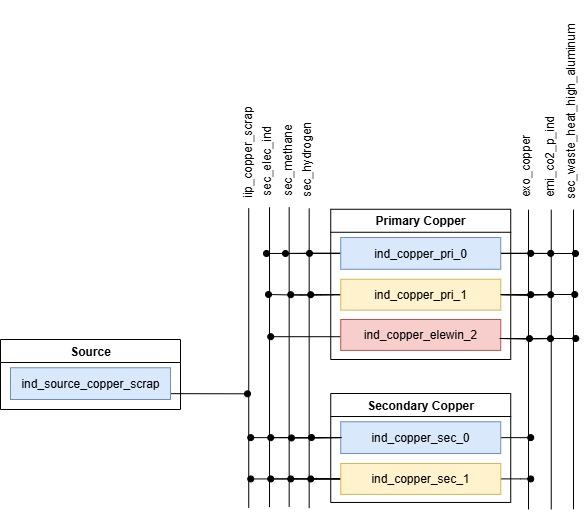 Figure 12: Reference Energy System for the Copper production process chain.
Paper Industry¶
The pulp and paper Industry branch within the specifically differentiates between the production of high quality paper and low quality paper, reflecting their distinct production routes and energy intensities. Paper production in the model is generally broken down into two main stages: pulp production and paper production (finishing).
-
Pulp production: This initial stage involves the conversion of raw materials into pulp. The model accounts for three distinct pulp production routes, each with its base and Best Available Technology (BAT) process options:
- Chemical pulp production: This route involves chemical processes to separate cellulose fibers from wood, producing pulp.
- Mechanical pulp production: This route mechanically grinds wood to produce pulp, typically resulting in higher yields but lower strength compared to chemical pulp.
- Recycling pulp production: This increasingly important route processes recycled paper to produce pulp, significantly reducing the demand for virgin wood pulp. The source process for recycled paper contains no economical information and does not account for any energy consumption, but rather is used to limit the availability recycled paper.
-
Paper production (finishing): Following pulp production, these processes convert the pulp into final paper products. The model differentiates based on the final product quality:
- High quality paper production: This process transforms pulp (primarily chemical and/or mechanical pulp) into higher-grade paper products.
- Low quality paper production: This process uses pulp (often recycled pulp) to produce lower-grade paper products.
Both high quality and low quality paper production stages also include base and BAT process options, allowing for efficiency improvements and technological upgrades. The production processes also generate waste heat (sec_waste_heat_high_paper), which can be used within the heat sector. Moreover, the production of black liqueur as an energy carrier byproduct of chemical pulp production is accounted for and integrated into the self generation model section. The process chain for the pulp and paper Industry, illustrating the various pulp production routes and paper finishing stages, is depicted in the following figure:
Figure 13: Reference Energy System for the Pulp and Paper Industry process chain.
Base year processes have existing capacities that decrease linearly over time, while BAT technologies are available as new investment options, enabling the model to explore cost-optimal decarbonization pathways for the sector.
Rest of the Industry¶
The Rest of the Industry in SEDOS consists of the following industrial branches, as also depicted in the energy balance for Germany:
- Food and Tobacco
- Rubber and Plastics
- Metal processing
- Machine manufacturing
- Other manufacturing
The processes in these industry branches contain detailed information on energy consumption, techno-economic and emission data for the relevant steps in the production of goods. The demand is expressed in Petajoules (PJ) and represents the energy service that amounts to the production within these branches.
The Rest of the Industry is modeled using 57 distinct processes, each depicting specific energy applications: machine drives, lighting, information and communication technology (ICT), process heat and process cooling. The total useful energy required for each energy application flows in the demand processes. For process heating a variety of technologies are used, including boilers, kilns, heat pumps, solar heat and heat exchangers. These technologies generate steam, high temperature heat or directly process heat. Heat exchangers are used to transform district heat into process heat.
Self-generation¶
The Self-generation or autoproducer can be distinguished by the sector they are used in and the energy type they are using. They are also split up into already existing autoproducers and autoproducers that will be created in the future. The future technologies are only categorized by the fuel type. Because they can be used in every industry sector, there would be too many individual processes if the were all individual for each sector. The existing autoproducers are used in five different sectors. In the steel, chemical, food and tobacco, aluminium and paper industry. In the steel industry only cokeovengas is used as an energy carrier. In the chemical industry coal, methane and heavy fuel oil is used.In the food and tobacco industry coal and methane is used. In the aluminium industry only methane is used. In the paper industry coal, methane, stem wood, black liquor, heavy fuel oil and naphtha autoproducers exist. For future autoproducer, the energy carriers are methane, biomass pellets, stem wood, hydrogen, coal, bio and non bio waste, biogas, oil, sewage sludge and black liquor. There are aggregated autoproducers in the model structure as well. These aggregated processes are categorized by their energy carrier. For the existing autoproducers there are for coal ,methane and heavy fuel oil processes combined. In the future autoproducer processes we have small and large coal and small, medium and large methane autoproducers. Those are aggregated to two processes.